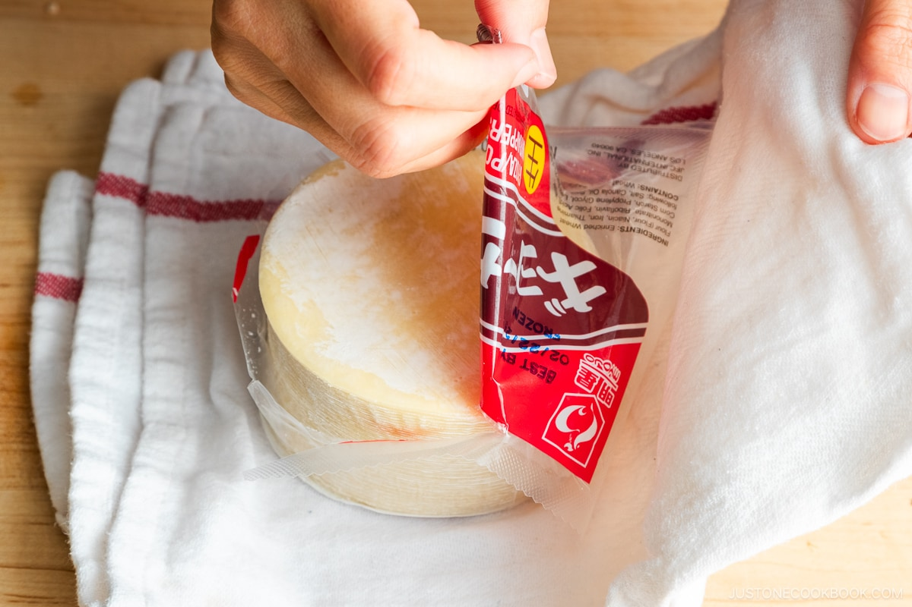
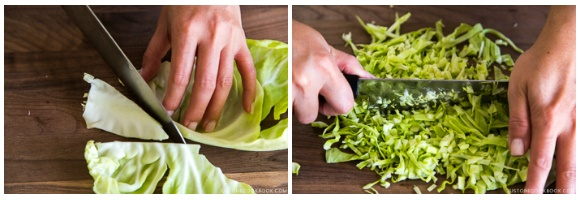
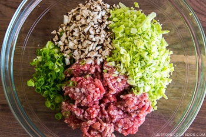

How to make the best chive dumplings
Intro to dumplings

The traditional Chinese dumplings, known as Jiaozi (餃子), are typically made with a filling of ground meat and vegetables wrapped in thinly rolled dough, sealed by pressing the edges together. Once assembled, they can be prepared through various cooking methods such as boiling (水餃), steaming (蒸餃), pan-frying (煎餃, also known as potstickers), or deep-frying (炸餃子).
In contrast, the Japanese version, called gyoza (餃子), is characterized by a distinctive cooking technique. Gyoza are initially pan-fried until crispy and golden brown on the bottom. Then, a small amount of water is added to the pan, and the dumplings are covered to steam. This dual cooking method results in gyoza with a delightful combination of textures: crisp bottoms and tender, soft tops that envelop the succulent filling within.
There are many different ingredients to use for dumplings: beef, pork, chive, and chicken. Typically, people use garlic for Japanese dumplings. In this recipe, we will continue to season this recipe with sake, salt, and pepper. We are going to use pork and chive, but feel free to use anything you prefer.
Ingredients
For The Filling
- 5 oz green cabbage
Ingredients
For The Filling
- 5 oz green cabbage
- 2 green onion/scallion (0.5 oz, 15 g)
- OPTIONAL shiitake mushrooms
- ¾ lb ground pork
- 2 cloves garlic
- 1 tsp ginger
For the seasonings
- 1 tsp sake (to remove the meat‘s odor; optional)
- 1 tsp toasted sesame oil
- 1 tsp soy sauce
- ¼ tsp Diamond Crystal kosher salt
- ⅛ tsp freshly ground black pepper
Folding wrapper
- a small bowl of water
- a thing of wrappers preferably this brand below

For Frying
- olive oil
- water
Dipping Sauce
- One or two green onions
- soy sauce
- chili oil/okazu
- sesame oil
- ginger
instructions
- cut your 5 0z of cabbage,and dice them reasonably.

- mince your green onionis, also use shitake mushrooms if youu are using.
- add everythimng together with your ¾ lb ground pork
it should look like below

- mince two garlic cloves and one tsp of ginger
- Season everything you have, add 1 tsp of sake, one tsp of toasted seasme oil,¼ tsp Diamond Crystal kosher salt, and ⅛ tsp freshly ground black pepper.
- Mix well and knead the mixture with your hand until it becomes sticky and pale in color.
Cooking
- To cook the fresh gyoza that you just folded, heat a large nonstick frying pan over medium heat. When the pan is hot, add 1 Tbsp neutral oil. Then, place the gyoza in a single layer, flat side down and without touching each other, in a circular pattern (or place them in two rows). You will need to cook the gyoza in batches; my large frying pan can fit about 13 pieces per batch.
- Cook until the bottom of the gyoza turns golden brown, about 3 minutes.
- Then, add ¼ cup water to the pan. Immediately cover with a lid and steam the gyoza for about 3 minutes or until most of the water evaporates.
- Cook uncovered until the gyoza is browned and crisp on the bottom. Remove to a plate. Repeat this process to cook the other batches.
- now do your sauce. mince your green onions add to a bowl,cut reasonable amount of ginger,add a little bit of okazu,the tiniest amount of seasame oil
- now just plate and your are done